|
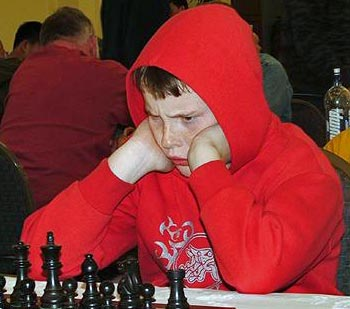 ChessWhen a nagging child is overheard arguing his case for mom or dad to buy
him a new video game, one particularly desperate talking point comes up again
and again: this
will totally improve my hand-eye coordination. If you're a parent
who feels like enrolling your gifted child into some kind of chess club because
it seems like a rewarding alternative to video games,
consider the observations of Reuben Fine, psychoanalyst and author of The
Psychology of the Chess Player originally
published in 1956: Chess is a hopelessly trivial human enterprise, which can't help your child think "several moves in advance" about difficult scenarios in the real world. It certainly won't get him off the Internet long enough to get laid. Playing chess for hours at a time only helps you play better chess for hours at a time -- and that's all it will ever do. Most people genuinely believe that chess is a perfect, flawless game incapable of creating controversy -- a hobbyist pursuit so ultimately pure and clean that no evil thoughts could ever rise from the board. In truth, most of us are in it for the money. 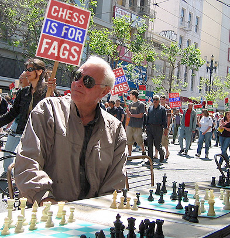On busy urban avenues like Market Street in San Francisco, gentlemen (and the occasional lady) engage themselves in a form of betting chess known as slash and trash. A group of these individuals runs the full gamut from Soviet-bloc and Asian immigrants to fresh-faced college students, homeless people and manic depressives. The betting chess environment is very much a pay to play operation: anywhere from one to five dollars buys you a seat at the table. If you fancy yourself a slash player, you'll need the right tools. For God sakes, throw your plastic Simpsons chess set with multicolored Bart pawns in the trash. Nobody likes to push weirdly-weighted ivory carvings around a miniature marblized re-telling of Alien vs. Predator. Even shiny wooden fold-out boards and elegant pieces sculpted from oak or walnut feel a little absurd. When pieces roll off the table and fall three feet to the concrete sidewalk, you don't want to start crying when your horsey's head snaps off. You will forever be referred to as a fish, an unpleasant nickname for a prison pussy punk who has no idea what he's gotten himself into. Instead, consider your environment: you're typically outdoors in windy weather or inside a smoky coffee shop in the University district. You want a set of chess pieces which can be endlessly 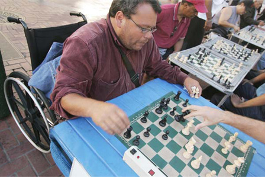gang banged around like a woman -- grabbed by the hair and slammed down real hard on a particular square. Like semi-decent sex, traditional blitz games need last no longer than two minutes. The slamming rhythm is very important to the street hustlers known as sharks. The more aggressively a shark can bang a piece down on a square, the more directly he's insinuating that the game already belongs to him. The opposite technique can be equally effective: pawn pushers delight in using their forefingers to nudge a piece slllllowly about the board -- in excruciatingly small, pixel-sized increments. Both the shark and the pawn pusher are engaged in a school of chess strategy which delights in playing the man, not the board. Get a standard, regulation chess mat in one of the two classic Apple monochrome monitor color schemes: green or amber. This soft, rubbery rectangle has lowercase letters spanning from a to h along one edge, and numbers running from 1 to 8 across the ranks. 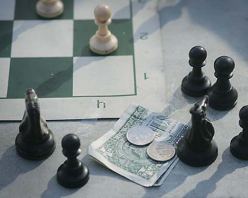It's best kept rolled in a tightly-bound tube which sticks up out of your backpack so everyone on the bus can see it -- or awkwardly folded with haphazard crinkles and creases so it bends and peaks all over the place during game play. Your chess mat should also be dirty -- filthy dirty in fact, totally banged up, and visibly battle-scarred. Slash players take a special pride in extinguishing their cigarettes directly on the square you were just checkmated, so after a few games your chess mat becomes a living, breathing document of your many failures. You will also need a two-dial chess clock. Yes, it will cost you about sixty dollars -- but this instrument is mandatory, as it limits a game a predetermined amount of time and prevents your opponent from dawdling. You don't want a game to last forever. Perhaps nobody's been more scammified by chess -- mentally or physically -- than former World Champion Bobby Fischer, arguably the most brilliant player in history. Here's a guy who started in 1949, as a six-year-old hanging out at the Brooklyn Chess Club. As a child, he appeared so completely "into" the game that his mom 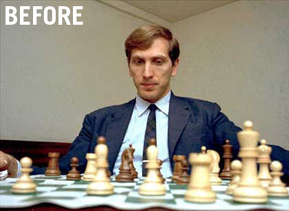 eventually hauled him off to the Children's Psychiatric Division of the Brooklyn Jewish Hospital. The doctor told mom to chillax. Leave him alone, let the boy play already. At age 14, he became Champion of the United States. Bobby would grow increasingly paranoid over the years, fearful of untrustworthy adults and other individuals who might trick him into giving away his secrets. At the height of the Cold War, Henry Kissinger personally pleaded with Fischer to try defeating the Soviets in chess during a season of high-stakes tournament games more politically charged than the Olympics. His opponent, Boris Spassky, grew visibly annoyed when Fischer objected to nearly every aspect of the gaming environment. The thermostat in the auditorium, Fischer claimed, was deliberately cold in an attempt to hinder his performance. The lights were too bright, the cameras too loud and way too close. The size of the audience was intended to throw him off game. The 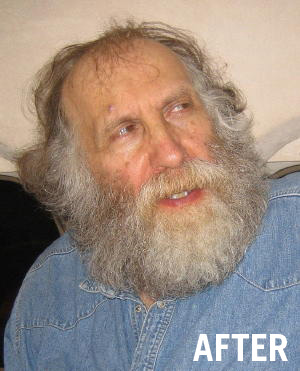 amount of the prize money wasn't nearly worth his trouble. The color of the chess board was off-putting. The KGB is spraying poison on my chair, onto my food, etcetera. Despite these tactics -- or perhaps because of them -- Fischer later emerged from that tournament victorious. Fischer ultimately become famous for other things, including a blue streak of outspoken anti-Semitism which likely cost him more than a few worldwide fans and allies. "There are too many Jews in chess", Fischer would say in 1962. "They seem to have taken away the class from the game. They don't seem to dress so nicely, you know. That's what I don't like". In 1972, he remarked that America was totally under the control of the Jews. On September 11, 2001, Fischer praised the terrorist attacks in New York as "wonderful", and hoped it would encourage America to imprison the Jews. Then he called for their execution by the hundreds of thousands. When Fischer tried to leave Japan with an invalid U.S. passport, he landed himself in a Japanese prison for nine months. If only we could have a civilized, family-friendly discussion about chess without having to bring up allegations of child molestation. On February 7, 2006, 51-year-old Senior Master Robert M. Snyder was ordered to stand trial on charges he molested three of his prized male pupils, each under the age of 15. One of the boys alleged that after attending a weekend chess camp in June of 2005, he'd slept in Snyder's bedroom without pajama bottoms. Another boy claimed that Snyder "touched him inappropriately", according to the Rocky Mountain News -- and "tickled him before they went out to lunch". Two of the boys insinuated that Snyder performed oral sex on them, while a third suggested that Snyder put his hands down his pants. 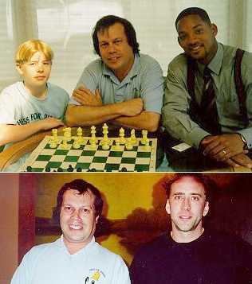 Snyder, the founder of Chess for Juniors, has taken his students to every National Junior High School Championship since 1986, and every National Elementary School Championship since 1989. He received the 1998 National Chess Educator of the Year Award at the All America Cup National Scholastic Championships. He's also the chess mentor of actor/rapper Will Smith, who started taking lessons in March 1998 while filming Enemy of the State. Actor Nicolas Cage, who believes chess is a good activity for kids, enrolled his son Weston in Snyder's class in 1999. Snyder was acquitted of similar child molestation charges more than twenty years ago in California. Possibly he opened with the Sicilian Nambla gambit, who knows. Chess scams are everywhere -- even on the Internet, thanks to the hundreds of spammers headquartered safely in Nigeria. Fraudulent emails are frequently pitched from the "Nigerian Chess Trainers Committee" directly to individuals on bulk email lists who have demonstrated an interest in the game at least once. Haven't you heard? Nigeria is actively recruiting chess teachers: 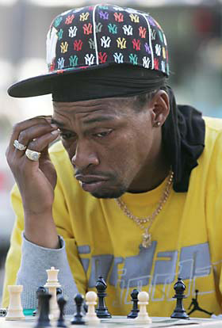"The welfare of the chess trainers would be catered for by NCTC and their flight tickets to Nigeria would be arranged by the Nigerian Embassy. The trainers would be lodged in Sheraton hotels Lagos for their two week stay and would each be paid $8000. After this two weeks, any trainer who decides he wants to stay would still be catered for by NCTC. He or she would be moved to his or her own apartment, paid $12000 monthly and given citizenship." Interested? Great. They need $980.00 to file your paperwork. There's no such thing as the NCTC, but the World Chess Federation (WCF) and the Federation Internationale des Echecs (FIDE) are the same thing: a singular, authoritative entity governing the premiere list of the world's top-rated professional competitors and ranked master players. Even the official point-assignment method which ranks and rates professional players competing in tournaments has always felt like kind of scam, because it's essentially a mathematical averaging system based on paired comparisons. One person alone cannot ever say how strong he is, unless he's played many different people -- all of whom, ostensibly, have competed against an adequate sampling of other players -- and so on, and so forth. The system which most closely approaches universal approval was developed in 1959 by Arpad Emre Elo, a physics professor at the University of Chicago. 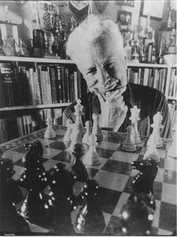In an article for the 1962 issue of Chess Life, professor Elo came up with analogy meant to describe why measuring the "strength" of a chess player is so tedious and arbitrary. "Often people who are not familiar with the nature and limitations of statistical methods tend to expect too much of the rating system. Ratings provide merely a comparison of performances, no more and no less. The measurement of the performance of an individual is always made relative to the performance of his competitors -- and both the performance of the player and of his opponents are subject to much the same random fluctuations. The measurement of the rating of an individual might well be compared with the measurement of the position of a cork bobbing up and down on the surface of agitated water with a yard stick tied to a rope and which is swaying in the wind." Nevertheless, players whose averages hover around 2200 can be considered Candidate Masters. With an average between 2400 and 2499, you can be an International Master. 2500 and above will earn you the status of International Grandmaster -- the second-highest title awarded to competitive chess players, and a title which you get to keep for life. The only thing higher than an International Grandmaster is of course a World Champion. 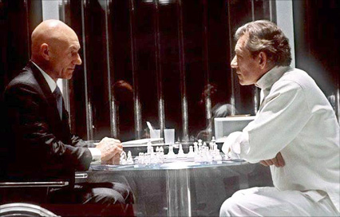Every so often, Hollywood happily shits out another movie featuring chess as one of its lesser themes. Chess boards are commonly invoked when hacky scriptwriters can't architect more visually appealing metaphors for two opposing forces of good and evil led by individuals with colliding intellects. Snippets of dialog between characters engaged in a "battle of wills" are often as trite as they are terse, with characters delivering stinging quips followed by the word "check". Examples include Independence Day, Se7en, CopyCat, Hackers, Mr. Holland's Opus, Phenomenon, The Interpreter, Dawn of the Dead, Pearl Harbor, The Thomas Crown Affair, The Seventh Seal, Harry Potter and the Sorcerer's Stone, and the scatterbrained last season of Twin Peaks, to name but a few. Other times, a more intimate cinematic portrait will focus on the journey of an Emotionally Sensitive Young Person as he or she begins to demonstrate an Extraordinary Level of Skill with the game -- leading inevitably to a study of whatever Dramatic Narrative Consequences accompany such a gift. Searching for Bobby Fischer and Little Man Tate are two such examples. 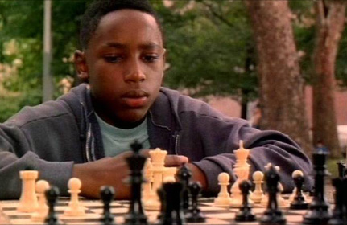 If that sounds like exactly the kind of nonsense you've learned to avoid at the movies, consider renting instead the brilliant Fresh starring Sean Nelson, directed by Boaz Yakin in 1994. It's a violent, exciting ghetto thriller which slowly and quietly unfolds into a plot of astounding complexity -- and the only "chess film" ever made which follows a child drug dealer and his prostitute sister on their rounds through the hood. Rated 'R' for Intense Realistic Depiction of Urban Violence, Drug Content, Pervasive Language and Sexuality. Or, instead of wasting your whole life caring about chess, consider saving the game as a hobby for when you're old and feeble. In the old folks home, daily chess games with Grandpa Simpson will help keep what's left of your mental condition in tip-top shape as you age, reducing the risk of brain diseases like Alzheimer's and Parkinsons. The mental decline which goes along with old age can be traced to "altered connections" between brain cells, according to Elizabeth Edgerly, a brain expert at the Alzheimer's A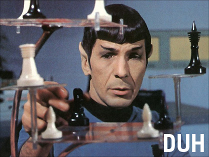ssociation. Chess is only one option for senior citizens -- experts are now saying that activities which involve a significant mental challenge are better for the brain than those which are routine. Memorizing a complicated set of dance steps, for instance, instead of just zoning out your stationary bike. Successful agers are typically mentally active people. Playing chess accomplishes a number of tasks vital to restoring pathways in the brain. During game play, monitoring the direction and placement of 32 individual pieces on a checkerboard grid sharpens short-term memory. Developing strategies for capturing your opponent's pieces -- however half-assed -- strengthens long-term memory. The act of putting yourself in your opponents' position to consider how he might react to your strategies is also key. Role reversal serves to reinforce important realities about boundaries. It may sound like mutual masturbation, but the concept of where self begins and others end is an important skill which erodes during the onset of Alzheimer's. It's also a characteristic which continues to elude increasingly obsessive human players as they grow old and die without much to show for themselves. 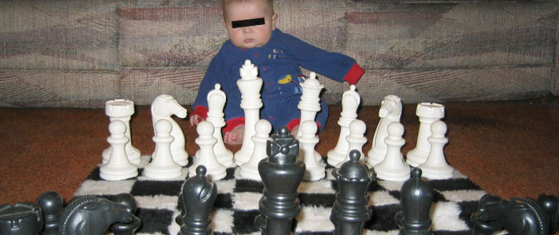 |